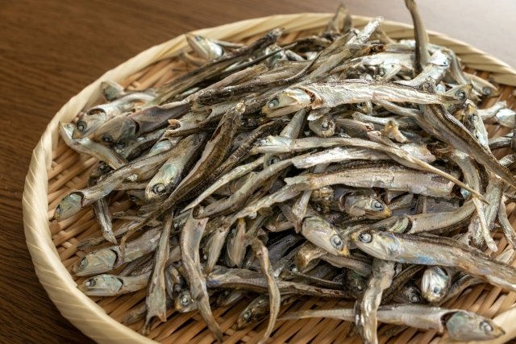
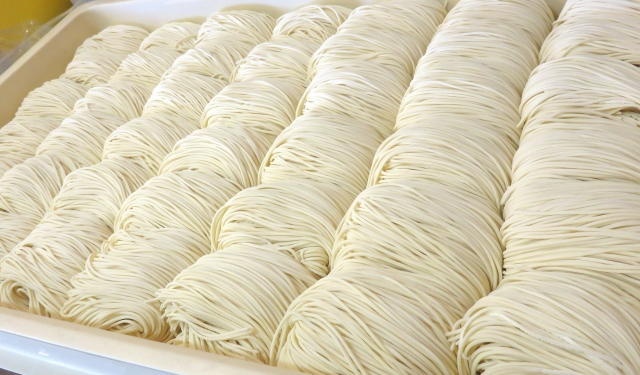

煮焚のこだわり
COMMITMENT

厳選した国産煮干し
最高品質の国産煮干しのみを使用し、豊かな旨味と深いコクを引き出しています。産地にこだわり、毎日新鮮な煮干しを仕入れています。

無添加・無化調
素材本来の味を大切にし、添加物や化学調味料を一切使わない、自然な旨味のラーメンを提供しています。
二段階のだし取り製法
煮干しの旨味を最大限に引き出すために、低温でじっくりと煮出す一次だしと、強火で旨味を凝縮する二次だしを使い、スープに深みを持たせています。

自家製麺とスープの絶妙なバランス
煮干しスープと合うように特別に作られた自家製麵。スープと麺が一体となるような食感と味わいを追及しています。
店舗情報
SHOP
- 店名
- 煮干しラーメン 煮焚
- TEL
- 044-999-9999
- 住所
- 〒214-0012
神奈川県川崎市多摩区中野島3丁目14
- アクセス
- JR東日本南武線 中野島駅から徒歩5分
- 営業時間
- 昼：11:30～15:00 ラストオーダー14:30
夜：18:00～21:00 ラストオーダー20:30
- 席数
- カウンター5席 テーブル3席
- 駐車場
- 無し
- お支払方法
- 現金・QRコード決済(PayPay・楽天Pay・メルペイ)※クレジットカード不可
地図
MAP